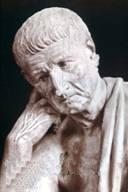

Aristóteles (384-322 a.C.), filósofo y científico griego, considerado, junto a Platón y Sócrates, como uno de los pensadores más destacados de la antigua filosofía griega y posiblemente el más influyente en el conjunto de toda la filosofía occidental.
Nació en Estagira (actual ciudad griega de Stavro, entonces perteneciente a Macedonia), razón por la cual también fue conocido posteriormente por el apelativo de El Estagirita. Hijo de un médico de la corte real, se trasladó a Atenas a los 17 años de edad para estudiar en la Academia de Platón. Permaneció en esta ciudad durante aproximadamente 20 años, primero como estudiante y, más tarde, como maestro. Tras morir Platón (c. 347 a.C.), Aristóteles se trasladó a Assos, ciudad de Asia Menor en la que gobernaba su amigo Hermias de Atarnea. Allí contrajo matrimonio con una pariente de éste (posiblemente su sobrina o su hija), llamada Pitias, y actuó como su consejero. Tras ser capturado y ejecutado Hermias por los persas (345 a.C.), Aristóteles se trasladó a Pela, antigua capital de Macedonia, donde se convirtió en tutor de Alejandro (más tarde Alejandro III el Magno), hijo menor del rey Filipo II. En el año 336 a.C., al acceder Alejandro al trono, regresó a Atenas y estableció su propia escuela: el Liceo. Debido a que gran parte de las discusiones y debates se desarrollaban mientras maestros y estudiantes caminaban por su paseo cubierto, sus alumnos recibieron el nombre de peripatéticos. La muerte de Alejandro (323 a.C.) generó en Atenas un fuerte sentimiento contra los macedonios, por lo que Aristóteles se retiró a una propiedad familiar situada en Calcis, en la isla de Eubea, donde falleció un año más tarde.
|
 |
Alumno de Platón, filósofo de la antigua Grecia, Aristóteles compartía la reverencia de su maestro por el conocimiento humano pero modificó muchas de las ideas platónicas para subrayar la importancia de los métodos arraigados en la observación y la experiencia. Aristóteles estudió y sistematizó casi todas las ramas existentes del conocimiento y proporcionó las primeras relaciones ordenadas de biología, psicología, física y teoría literaria. Además, Aristóteles delimitó el campo conocido como lógica formal, inició la zoología y habló de casi todos los problemas filosóficos principales reconocidos en su tiempo. Conocido por los pensadores medievales como 'el filósofo', Aristóteles es quizá el pensador más importante en la historia de Occidente e históricamente, tuvo quizás la mayor influencia individual en el desarrollo intelectual de Occidente.